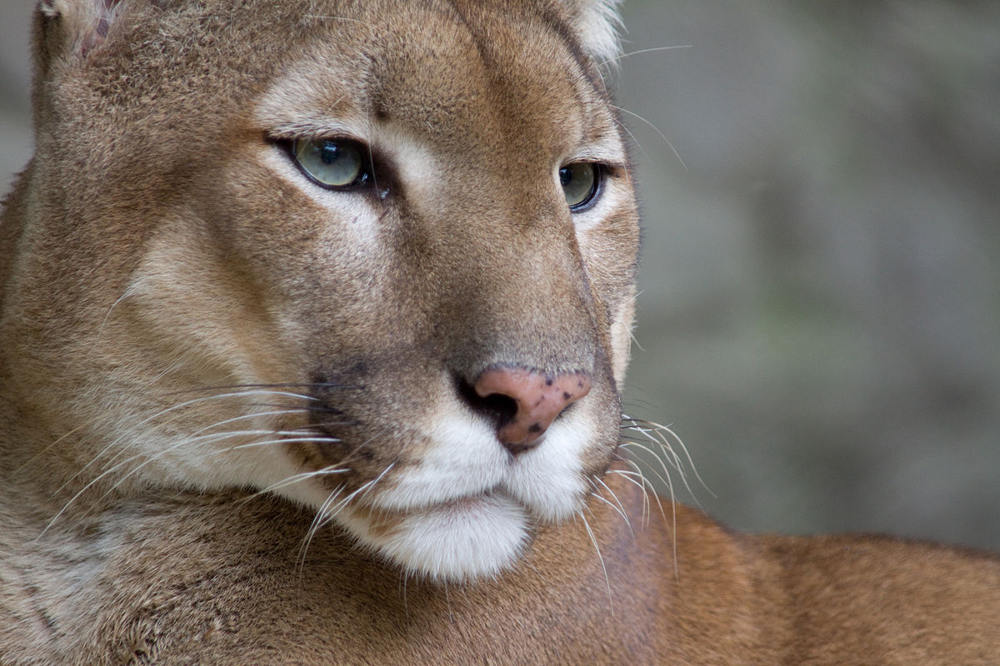
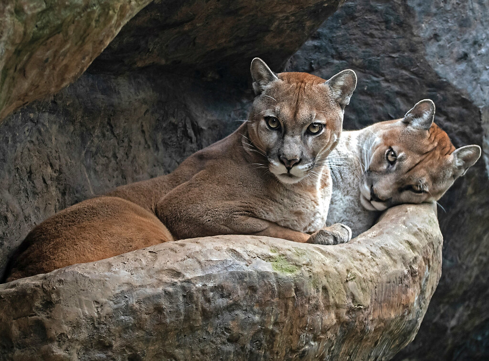

Puma, león de montaña
 Preocupación Menor
Poblaciones en peligro de extincion
Reproducción
Durante el periodo de apareamiento maúllan en forma similar a un gato.
Su gestación es de 13 semanas y tienen camadas de 1 a 4 crías. Las crías nacen con pelaje amarillento y con manchas negras, las cuales pierden cuando tienen 6 meses de edad.
En el Parque Nacional Braulio Carrillo, propiamente en la Quebrada Sanguijuela (500m.s.n.m., aprox.) se observó una hembra con dos juveniles casi del tamaño de la madre, en setiembre, a eso de las 11:30 a.m.
Alimentación
Son carnívoros y se alimentan de gran variedad de animales, siendo el venado cola blanca (Odocoileus virginianus) una de sus principales presas. Se alimenta del zorro pelón (Didelphis marsupialis), del mono congo (Alouatta palliata), del mono colorado (Ateles geoffroyi), el mono carablanca (Cebus capucinus), el puercospín (Sphiggurus mexicanus), guatuza (Dasyprocta punctata), rata de monte (Proechimys semispinosus), iguana (Iguana iguana), tortuga lora (Lepidochelys olivacea).
Cuando caza es muy silencioso.
Comportamiento
Son solitarios.
En el Parque Nacional Braulio Carrillo, propiamente en la Quebrada Sanguijuela (500 m.s.n.m., aprox.), se observaron, por unos 20-30 segundos, una hembra con dos juveniles casi del tamaño de la madre, en setiembre, a eso de las 11:30 a.m.; la hembra estaba echada en el playón de la quebrada y los juveniles estaban jugando de empujarse y morderse. Cuando la hembra olfateó presencia humana, penetró caminando rápido en el bosque y las crías la siguieron inmediatamente.
Habitat
Bosques secos, bosques húmedos, bosques de galería.
Distribución
Hábitats disponibles en de todo el país, desde el nivel del mar hasta los 3.300 m.
Distribución fuera de Costa Rica
Desde el sur de Canadá y E.E.U.U. hasta el sur de Argentina y sur de Chile. Se localiza desde las tierras bajas hasta los 5.000 m.s.n.m. (en los Andes).
Distribución de Area de conservación
Amistad CaribeAmistad PacificoHuetar NorteArenalCordillera Volcanica CentralGuanacasteOsaPacifico CentralTempisqueTortuguero
Tipo de Localidad
Brasil. Limitado por Goldman (en Young y Goldman, 1946) a Cayenne, Guyana Francesa.
Estado de amenaza
ESTADO:
La subespecie P.c. costaricensis está incluída en el Apéndice l, CITES. Las otras subespecies se localizan en el Apéndice ll, CITES. Esta especie está considerada como en peligro de extinción, debido principalmente a la pérdida de su habitat por la deforestación y a la cacería indiscriminada. Está protegida y regulada por la Ley de Conservación de la Vida Silvestre No. 7317, la Ley Orgánica del Ambiente No. 7554 y el decreto No. 26435-MINAE.
Corbet, G.B. & J.E. Hill. 1991. A world list of mammalian species. Oxford University, London, England. 243 p..
Currier, M.J. 1983. Felis concolor. Mammalian Species 200: 1-7.
Chinchilla, F. 1994. La dieta del jaguar (Panthera onca), el puma (Felis concolor), el manigordo (Felis pardalis) (Carnivora, Felidae) y dos métodos de evaluación de su abundancia relativa en el Parque Nacional Corcovado, Costa Rica. Tesis de Maestría en Manejo de Vida Silvestre. Sistema de Estudios de Postgrado, Programa Regional en Manejo de Vida Silvestre para Mesoamérica y el Caribe. Heredia, Costa Rica. 49 p.
Goodwin, G.C.. 1946. Mammals of Costa Rica. Bulletin of The American Museum of Natural History 87(5): 271-473
Hall, E.R..1981. Mammals of North America. Vols. 1 and 2. John Wiley, New York. 1175 p.
Nowak, R.M. 1991. Walker´s Mammals of the World. Fifth Edition. The John Hopkins University. Baltimore. 1362 p.
Reid, F.. 1997. A FIELD GUIDE TO THE MAMMALS OF CENTRAL AMERICA & SOUTHEAST MEXICO. Oxford University Press, New York. 334 p.
Rodríguez, J. & F. Chinchilla. 1996. Lista de Mamíferos de Costa Rica. Rev. Biol. Trop. 44(2): 877-890.
Timm, R., D. E. Wilson, B.Clauson, R. LaVal & C. Vaughan. 1989. Mammals of the La Selva-Braulio Carrillo complex, Costa Rica. Fish and Wildlife Service, U.S.A.. North American Fauna 75. 162 p
Universidad de Costa Rica. s.f.. Catálogo de Mamíferos. Museo de Zoología, Escuela de Biología, Universidad de Costa Rica. s.d..
Vaughan, C. 1983. A report on dense forest habitat for endangered wildlife species in Costa Rica. Escuela de Ciencias Ambientales. Universidad Nacional. Heredia, Costa Rica. 99 p.
Wilson, D.E. 1983. Checklist of Mammals. Pp. 443-448, In: D.H. Janzen (ed.). Costa Rican Natural History. University of Chicago Press. Chicago.
Wilson, D.E. & D.M. Reeder (eds.). 1993. Mammals Species of the World: a taxonomic and geographic reference. Second Edition. Smithsonian Institution Press, Washington. 1.206 p.